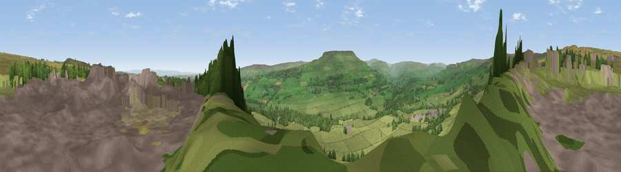

Viewpoint near Preston under Scar
#8669 in England · top 12% of its area beats it · near Preston under ScarWhere it is
The exact computed spot (SE 06275 91825). Click the marker for map links.
The view, rendered

A 360° render of this exact spot computed from the terrain model, tree cover and land cover — summer colours, afternoon light, calibrated against photographs of famous viewpoints. Real trees, hedges and buildings will differ in detail.
The panorama
Grey silhouette: terrain skyline in each direction (720 bearings, Earth curvature and refraction included). Dashed green: skyline with trees (+15 m) and buildings (+8 m) as obstacles. Blue strip: how far the ground is visible on each bearing.
Where the view opens
Wedge length = distance to the farthest visible ground on that bearing (vegetation-aware). Rings at 10, 25 and 50 km.
What fills the view
71% grassland · 16% woodland · 10% built-up · 2% bare ground · 1% cropland
Angular shares of the visible panorama (visual magnitude), not map area. Landscape diversity 0.39 (0–1 Shannon).
Key numbers
More beautiful places nearby
The staircase of upgrades: each row has a higher view potential than everything closer. Driving times are estimates from straight-line distance, calibrated against real road routing — check an actual route before setting out.
| Place | Direction | Drive | Score |
|---|---|---|---|
| Whit Fell | NE · 4 km | ~9 min | 70.7 |
| Viewpoint near West Witton | S · 5 km | ~11 min | 75.6 |
| Viewpoint near East Witton | SE · 10 km | ~20 min | 77.8 |
| Whernside | WSW · 34 km | ~52 min | 79.9 |
| Viewpoint near Kirby Knowle | E · 39 km | ~58 min | 80.5 |
| Beacon Hill | E · 40 km | ~60 min | 84.7 |
| Carlton Bank | ENE · 47 km | ~67 min | 85.1 |
| Roseberry Topping | ENE · 56 km | ~77 min | 85.8 |
54.32197, -1.90503 · source: screening · position refined by local search. Computed location — check access rights before visiting.